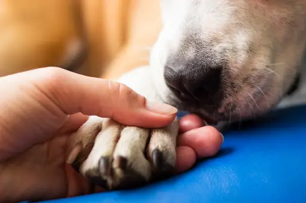

VOLUNTARIADO
Hospitales
Inscripciones únicamente para nivel secundario.
Días y Horarios: Miércoles y Viernes - 17:00hs a 18:30hs.
Actividades:
- Acompañamiento y atención a pacientes en hospitales locales.
- Asistencia en actividades recreativas y terapéuticas.
- Apoyo logístico en la distribución de suministros y la organización de eventos.
- Colaboración en tareas administrativas según sea necesario.
Beneficios:
- Contribución directa al bienestar de los pacientes hospitalizados.
- Adquisición de habilidades de comunicación y empatía.
- Experiencia en un entorno de atención médica y trabajo en equipo.
- Oportunidad de hacer una diferencia significativa en la comunidad.
Cómo Unirse:
- Regístrate en el formulario seleccionando la opción de voluntariado.
- Participar en una sesión de orientación y capacitación.
- Cumple con los requisitos de edad y disponibilidad mínima de horas.

Refugio de Animales
Inscripciones únicamente para nivel primario y secundario.
Días y Horarios: Miércoles y Viernes - 17:00hs a 18:30hs.
Actividades:
- Cuidado y alimentación de animales en el refugio.
- Limpieza y mantenimiento de las instalaciones.
- Participación en actividades de enriquecimiento ambiental para los animales.
- Apoyo en eventos de adopción y campañas de concientización.
Beneficios:
- Ayudar a mejorar la calidad de vida de los animales abandonados o en situación de riesgo.
- Desarrollar habilidades de trabajo en equipo y responsabilidad.
- Aprender sobre el cuidado y el comportamiento animal.
- Experimentar la gratificación personal de ayudar a los animales necesitados.
Cómo Unirse:
- Regístrate en el formulario seleccionando la opción de voluntariado.
- Participar en una sesión de orientación y capacitación.
- Comprométete a cumplir con los horarios asignados y seguir las políticas del refugio.